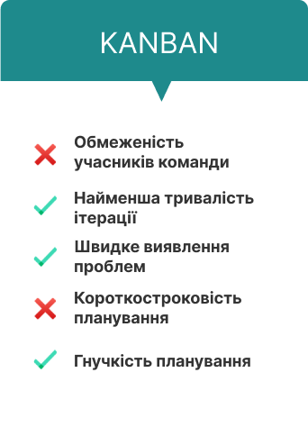
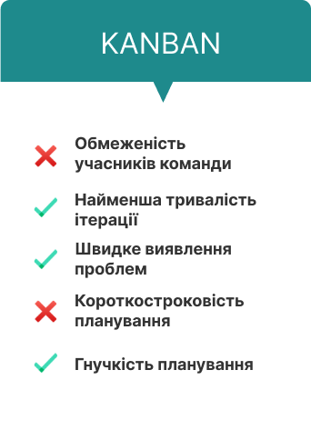

Kanban методологія розробки
Методологія Kanban — це система постановки завдань, коли всі етапи проекту візуалізуються на спеціальній дошці. Члени команди можуть бачити поточний стан завдання будь-якої миті часу. Це передбачає повну прозорість роботи. Kanban відносять до agile-підходів - "гнучким" технологіям, призначеним для розробки програмного забезпечення. За ведення дошки відповідальні усі учасники команди. Будь-який залучений у процес співробітник може переміщати готові картки на дошці. Така структура забезпечує наочність виконання. Можна переглянути поточний статус завдання та своєчасно виявити проблеми. При роботі з kanban команда єдина - всі рішення ухвалюють спільно. Є менеджер проекту, але він не керує, а організовує роботу. Проект поділяють на ітерації, довжина яких може бути різною. Також, щодо канбан-методології не передбачено чіткого дотримання конкретних етапів. Команда сама визначає, що і коли їй зручніше робити. Наприклад, підбиття підсумків здійснюють наприкінці кожного місяця, планування беклогу — після завершення завдань, спільні обговорення — за необхідності. Але робота над проектом триває безперервно.


 
